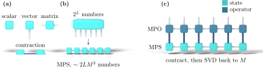

Advanced Quantum Materials 2027 · All lectures · Lecture notes
Session 7. Quantum Many-Body Entanglement and Tensor Networks
7.9 Tensor diagrams as notation for networks and operators
Matrix product states come with a convenient graphical notation, which makes it much easier to think about both the ansatz and the algorithms built on it. A scalar, which is a tensor of rank 0, is drawn as a point. A vector, of rank 1, is a point with one free leg. A matrix, of rank 2, is a point with two legs. A tensor of rank 3 is a point with three legs, and so on for any rank. Each leg represents one index of the tensor, and when we join two legs of two tensors, this means that we sum over the shared index, which is called a contraction.
An MPS is then a horizontal chain of such points, with one point per site. Each point has one physical leg pointing down, which is the index \(s_i\), the local spin value. It also has one or two virtual legs that connect it to its neighbors in the chain, and these carry the bond-dimension index that is summed over. A matrix product operator (MPO) represents an operator, in particular the Hamiltonian, in the same way. Now each site has two physical legs instead of one, which correspond to the two indices \(\sigma_i,\sigma_i'\) of the operator, and the same virtual legs that link neighboring sites. To apply an MPO to an MPS, for example to compute \(H|\Psi\rangle\), we join the two diagrams along the physical legs and contract them. This means that we multiply every pair of matrices that share an index and sum over that index. If we do this in a naive way, the bond dimensions of the two objects are multiplied, which would remove the advantage of the method. In practice, we do a singular value decomposition of the result and keep only the largest singular values, so we truncate back to a bond dimension that we can handle, and we remove the least important part of the Hilbert space that is represented. This truncation step is the practical core of almost every MPS algorithm, including the ground-state search of the next section. Figure 7.4 shows together the notation, the ansatz (7.5) drawn in this notation, and this step of contraction and truncation.

An MPS of bond dimension \(M\) is acted on by an MPO of bond dimension \(D\), and we contract the physical legs without truncating. What is the bond dimension of the result?
Show the answer
The correct option is A.
Each bond of the result carries one index of the state and one of the operator, so the dimensions multiply. This growth is the reason why a truncation by singular value decomposition follows each operation.
A tensor has three legs, and each leg has dimension \(4\). How many numbers does it contain?
Show the answer
The correct option is C.
The number of entries is the product of the dimensions of the legs, \(4\times4\times4=64\).